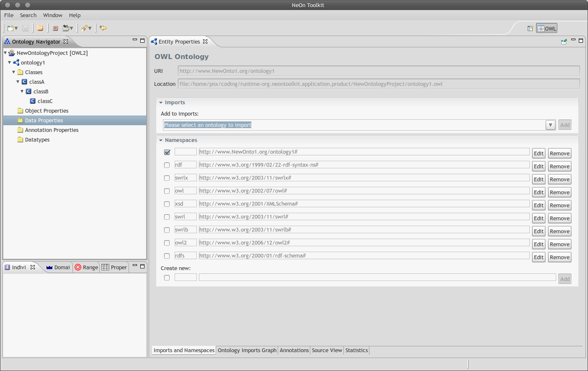

NeOn Toolkit Platform
Figure:
NeOn Toolkit editor GUI
| r0.5

|
The NeOn Toolkit is an ontology engeneering environment implemented as
a desktop application built on the code-base of
OntoStudio5.1, which is in turn based on the
popular IDE Eclipse. The application is implemented as an
Eclipse application with the advantage that the application uses the proven
Eclipse application model and tools of the Eclipse platform.
Technically an Eclipse application is a special plugin which is started
by the eclipse platform. In contrast to usual plugins the lazy-loading
principle does not apply to it and menus and toolbars can be customized
programmatically.
Apart from basic ontology creation the NeOn Toolkit features many other
ontology engineering tools that support in the ontology development lifecycle.
Jan Novacek
2011-07-11